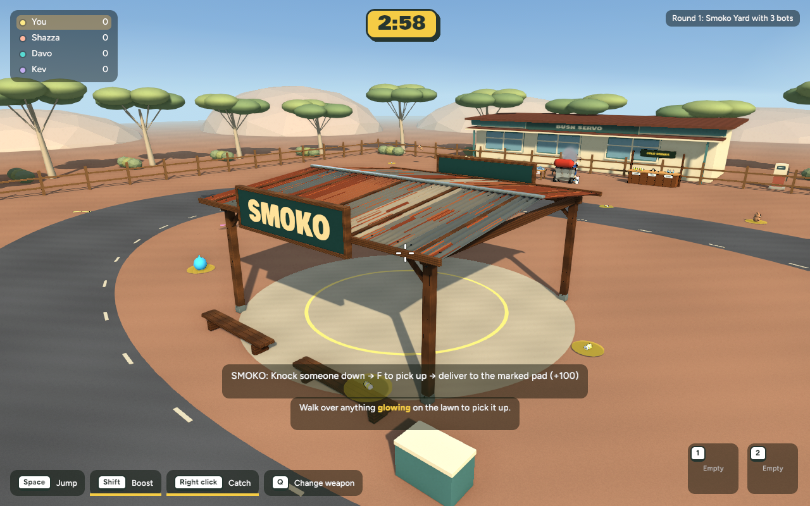
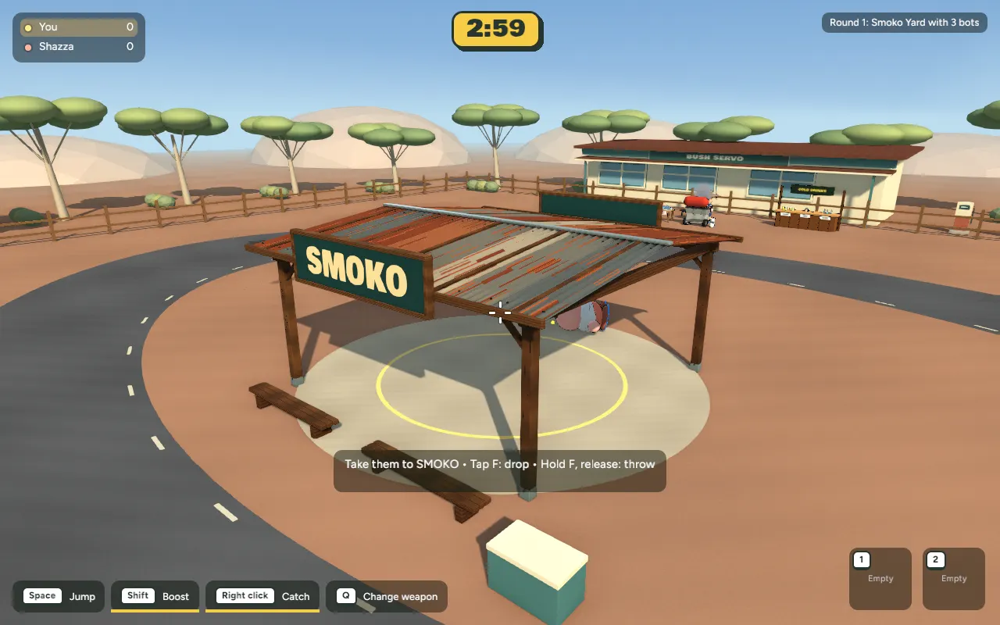
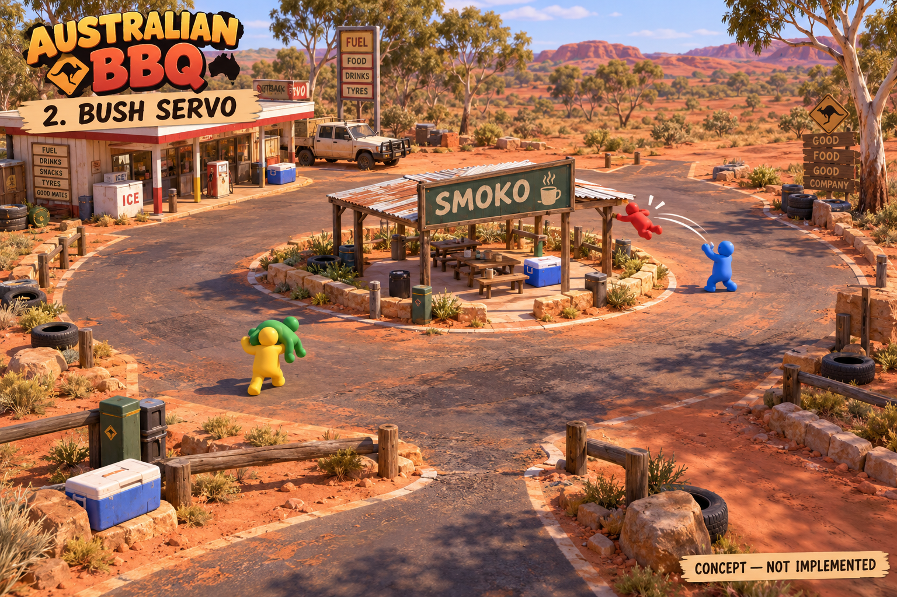

Bush Servo · Blender shelter
26 October 2026 · Actual game captures. A first concept-inspired shelter asset, not a recreation of the entire concept scene. Nothing committed or published.
Implemented in the game

Corrugated metal geometry, varied rust and galvanized panels, baked timber grain, framed lettering, braces, bolts, post shoes and planked rear benches. The centre stays open for Smoko deliveries.
Close comparison — identical camera
Gameplay comparison — identical camera
Overview comparison — identical camera
Actual delivery sequence
Controlled game fixture using the existing carry/throw rules. Delivery awarded +100 once; no carried victim left behind. This is not a human playtest.

Performance
Same Mac, 1280×800, polished/pop settings, 600 measured wall-clock frames per view. Local samples only; not GPU timestamps or a browser-device benchmark.
| View | Before mean | After mean |
|---|
| overview | 8.046 ms | 8.788 ms |
| gameplay | 8.525 ms | 8.774 ms |
| close | 8.156 ms | 8.768 ms |
GLB: 1.60 MiB, 29,318 triangles, 16 material primitives and five embedded 128×512 grain maps. CPU image storage grows by 1.25 MiB; total mesh entities fall from 7,338 to 7,331. Mean frame time rises by about 3–9% across these samples; p95 stays below 15 ms. Further material batching is an option if this becomes significant on slower hardware.
Original artistic reference — concept, not implemented

Scope and limitations
The existing collision boxes, scoring ring, carry/throw rules and other maps are unchanged. Roof and sign remain visual overhead geometry as before. Picnic tables, mugs, stone walls, richer foliage and the remaining servo assets from the concept are not included in this shelter pass. The model is closer in shape and materials, but the complete concept lighting and scenery have not been matched.
Recovery checkpoint and verification